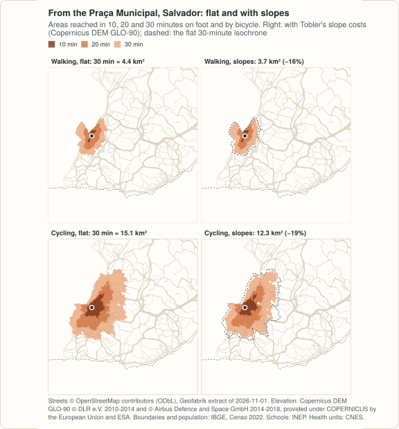

Example: terrain, in Salvador (Bahia) and Olinda (Pernambuco)¶
What do slopes change in walking and cycling times? This example builds two cities built on hills, Salvador (Bahia, 2.4 million people in the Censo 2022, a city split by an escarpment between its upper and lower towns) and Olinda (Pernambuco, 350 thousand, a historic centre on hills next to a flat coastal strip), each twice: on flat ground, and with an elevation raster from the Copernicus DEM (GLO-90, 3 arc seconds), with Tobler's hiking function and with Minetti's energy cost. Then it measures the areas reached from the centre and the time from every resident to the nearest public school and primary health care unit.
The code blocks make one script; the output shown under each block is what
it prints, computed on 2026-11-12. It repeats, step by step, the cities of
hills of the R example, and prints the same
numbers; the R example also covers the Recife metropolitan region and five
more municipalities of Pernambuco, and compares GLO-90 with GLO-30 (see
Which raster below). It needs
geopandas 1.0 or later and two command-line tools:
osmium to cut the street extract and
GDAL's gdalwarp to cut the elevation model (brew install osmium-tool
gdal, apt install osmium-tool gdal-bin, or conda-forge).

site/figures/terrain.R in the repository.Streets only
No open GTFS feed was found for Salvador, and neither Bahia nor Pernambuco has one in the Mobility Database. So this example routes on the streets. (Grande Recife publishes a feed on its own site, found after this page was written: the Recife metropolitan region example routes on it.)
The data¶
| Data | Source | Licence |
|---|---|---|
| Streets | OpenStreetMap, extract of the Nordeste region by Geofabrik, dated 2026-11-01 (445 MB, MD5 93318fcddd85a53e8386eaa93588847c) |
ODbL 1.0 |
| Elevation | Copernicus DEM GLO-90 (2021 release; files of 2022-05-09), a surface model at 3 arc seconds (about 90 m), read from its tiles on the AWS open data registry on 2026-11-12 | Copernicus DEM licence: free use with attribution |
| Municipal boundaries | IBGE, malhas municipais (API, version 3) | public data, IBGE |
| Population | IBGE, Censo Demográfico 2022, census tracts with their population, variable v0001, files of Pernambuco (44 MB) and Bahia (118 MB) |
public data, IBGE |
| Schools | INEP, Catálogo de Escolas 2023, with the coordinates of each school, as published by Ipea's geobr (schools_2023, 101 MB for Brazil) |
public data, INEP; geobr is MIT |
| Health units | CNES, Ministério da Saúde, through OpenDataSUS (cnes_estabelecimentos_csv.zip, 57 MB for Brazil, updated daily; downloaded on 2026-11-12) |
open data, Ministério da Saúde |
import gzip
import math
import os
import shutil
import subprocess
import urllib.request
import zipfile
from pathlib import Path
import geopandas as gpd
import numpy as np
import pandas as pd
from shapely.geometry import Polygon
import peabiru
data_dir = Path(os.environ.get("PEABIRU_EXAMPLE_DATA", "terrain-data"))
raw = data_dir / "raw"
raw.mkdir(parents=True, exist_ok=True)
def fetch(url, name=None):
dest = raw / (name or url.rsplit("/", 1)[1])
if not dest.exists():
part = dest.with_suffix(".part")
with urllib.request.urlopen(url) as response, open(part, "wb") as out:
# IBGE's API sends its answer gzip-compressed, asked or not
gz = response.headers.get("Content-Encoding") == "gzip"
shutil.copyfileobj(gzip.GzipFile(fileobj=response) if gz else response, out)
part.rename(dest)
return dest
tracts_url = ("https://ftp.ibge.gov.br/Censos/Censo_Demografico_2022/"
"Agregados_por_Setores_Censitarios/malha_com_atributos/setores/gpkg/UF/{0}/"
"{0}_setores_CD2022.gpkg")
nordeste = fetch("https://download.geofabrik.de/south-america/brazil/nordeste-261101.osm.pbf")
tracts_file = {uf: fetch(tracts_url.format(uf)) for uf in ["BA", "PE"]}
schools_file = fetch("https://www.ipea.gov.br/geobr/data_gpkg/schools/2023/schools_2023.gpkg")
cnes_file = fetch("https://s3.sa-east-1.amazonaws.com/ckan.saude.gov.br/CNES/"
"cnes_estabelecimentos_csv.zip")
# IBGE code, state, metres around the municipality, cell spacing, UTM zone
# (SIRGAS 2000 / UTM 24S and 25S), and the point the isochrones start from
cities = pd.DataFrame({
"key": ["salvador", "olinda"], "code": ["2927408", "2609600"],
"uf": ["BA", "PE"], "uf_code": ["29", "26"], "buffer": [3000, 3000],
"spacing": [500, 250], "utm": [31984, 31985],
"origin": ["Praça Municipal", "Alto da Sé"],
"lon": [-38.5128, -34.8408], "lat": [-12.9740, -8.0136],
}).set_index("key")
Streets and elevation¶
The streets are cut from the regional extract with the municipality and 3 km
around it, as in the Recife and Caruaru example.
The elevation model is cut over the box of those streets: GDAL reads only
the parts of the Copernicus tiles it needs, straight from the AWS registry,
and the crop keeps the tiles' own grid (no resampling). The sea has no
tiles; the documentation of the registry says to take it as 0 m, which
INIT_DEST=0 does. The extract goes in two directories: network/ alone, and
network-dem/ with the raster, which turns slope costs on.
dem_url = ("https://copernicus-dem-90m.s3.amazonaws.com/Copernicus_DSM_COG_30_{0}_00_{1}_00_DEM/"
"Copernicus_DSM_COG_30_{0}_00_{1}_00_DEM.tif")
def boundary_of(code, utm):
url = ("https://servicodados.ibge.gov.br/api/v3/malhas/municipios/" + code +
"?formato=application/vnd.geo+json&qualidade=maxima")
b = gpd.read_file(fetch(url, f"{code}.geojson"))
return b.to_crs(utm).make_valid()
def cut_streets(key, boundary, buffer):
folder = data_dir / key / "network"
folder.mkdir(parents=True, exist_ok=True)
polygon = data_dir / key / "cut.geojson"
# 30 segments per quarter circle, as sf's st_buffer()
gpd.GeoSeries(boundary.buffer(buffer, quad_segs=30)).to_crs(4326).to_file(polygon)
pbf = folder / f"{key}.osm.pbf"
subprocess.run(["osmium", "extract", "--overwrite", "-p", str(polygon),
str(nordeste), "-o", str(pbf)], check=True)
return pbf
def exists(url):
try:
with urllib.request.urlopen(urllib.request.Request(url, method="HEAD")):
return True
except OSError:
return False
def cut_dem(key, pbf):
folder = data_dir / key / "network-dem"
folder.mkdir(exist_ok=True)
if not (folder / pbf.name).exists():
os.link(pbf, folder / pbf.name)
# the box of the extract's streets, not of the cut: osmium keeps whole the
# ways that cross the cut, and peabiru takes points off the raster as 0 m
streets = folder / "streets.osm.pbf"
subprocess.run(["osmium", "tags-filter", "--overwrite", str(pbf), "w/highway",
"-o", str(streets)], check=True)
box = subprocess.run(["osmium", "fileinfo", "-e", "-g", "data.bbox", str(streets)],
check=True, capture_output=True, text=True).stdout
streets.unlink()
xmin, ymin, xmax, ymax = (float(v) for v in box.strip("()\n").split(","))
px = 3 / 3600 # pixels centred on the 3-arc-second grid: edges half a pixel off
te = [(math.floor(xmin / px - 0.5) + 0.5) * px, (math.floor(ymin / px - 0.5) + 0.5) * px,
(math.ceil(xmax / px - 0.5) + 0.5) * px, (math.ceil(ymax / px - 0.5) + 0.5) * px]
tiles = []
for lat in range(math.floor(te[1]), math.floor(te[3]) + 1):
for lon in range(math.floor(te[0]), math.floor(te[2]) + 1):
ns = f"{'S' if lat < 0 else 'N'}{abs(lat):02d}"
ew = f"{'W' if lon < 0 else 'E'}{abs(lon):03d}"
if exists(dem_url.format(ns, ew)):
tiles.append("/vsicurl/" + dem_url.format(ns, ew))
tif = folder / f"{key}_dem.tif"
subprocess.run(["gdalwarp", "-q", "-overwrite", "-of", "GTiff", *tiles, str(tif),
"-te", *[f"{v:.10f}" for v in te], "-tr", f"{px:.15f}", f"{px:.15f}",
"-r", "near", "-wo", "INIT_DEST=0", "-ot", "Float32",
"-co", "COMPRESS=DEFLATE", "-co", "PREDICTOR=3", "-co", "TILED=YES"],
check=True)
return len(tiles), tif
boundaries = {}
for key, c in cities.iterrows():
boundaries[key] = boundary_of(c["code"], c["utm"])
pbf = cut_streets(key, boundaries[key].geometry, c["buffer"])
n, tif = cut_dem(key, pbf)
print(f"{key:8} streets {pbf.stat().st_size / 1e6:5.1f} MB, "
f"elevation {n} tiles, {tif.stat().st_size / 1e6:4.1f} MB")
salvador streets 9.0 MB, elevation 2 tiles, 0.3 MB
olinda streets 3.4 MB, elevation 2 tiles, 0.1 MB
Which raster¶
The Copernicus DEM is a surface model: it measures the top of whatever the
radar saw, buildings and trees included. At 1 arc second (GLO-30, the same
address with 30m and COG_10) a street between towers reads metres above
its neighbour, and since peabiru samples the raster every 10 m along each
street, at the nearest pixel, those steps become slopes. The
R example
measures it on a flat district of towers in Recife, where slopes should
cost nothing: GLO-30 adds a minute to the average walk to a health unit,
GLO-90 0.15 of a minute. So this example uses GLO-90, which averages the
roofs away, and with them the short steep streets: its slope costs are on
the low side. A terrain model (bare earth) at a finer resolution, where one
exists, is the better input.
Where people live, and the units¶
A hexagonal grid with the population of the census tracts (500 m apart in Salvador, 250 m in the small municipality of Olinda), public schools from INEP and primary health care units from CNES, over the cut area, as in the Recife and Caruaru example.
def hex_grid(area, spacing):
xmin, ymin, xmax, ymax = area.total_bounds
h = spacing * np.sqrt(3) / 2
r = spacing / np.sqrt(3)
k = np.radians(30 + 60 * np.arange(7)) # pointy side up
cells = []
for j in range(-1, int(np.ceil((ymax - ymin) / h)) + 2):
for i in range(-1, int(np.ceil((xmax - xmin) / spacing)) + 2):
x = xmin + i * spacing + (j % 2) * spacing / 2
y = ymin + j * h
cells.append(Polygon(zip(x + r * np.cos(k), y + r * np.sin(k))))
cells = gpd.GeoSeries(cells, crs=area.crs)
cells = cells[cells.intersects(area.union_all())].reset_index(drop=True)
return gpd.GeoDataFrame({"id": np.arange(1, len(cells) + 1)}, geometry=cells)
def population_grid(c, boundary):
tracts = gpd.read_file(tracts_file[c["uf"]], where=f"CD_MUN = '{c['code']}'",
columns=["v0001"])
tracts = tracts.to_crs(c["utm"])
tracts["geometry"] = tracts.make_valid()
tracts["tract_area"] = tracts.area
cells = hex_grid(boundary, c["spacing"])
parts = gpd.overlay(cells, tracts, how="intersection", keep_geom_type=True)
parts["people"] = parts["v0001"] * parts.area / parts["tract_area"]
cells["population"] = cells["id"].map(parts.groupby("id")["people"].sum()).fillna(0)
centres = cells.centroid.to_crs(4326)
cells["lon"], cells["lat"] = centres.x.round(6), centres.y.round(6)
cells["id"] = cells["id"].astype(str)
return cells[cells["population"] > 0]
def schools_in(area):
s = gpd.read_file(
schools_file, bbox=area.bounds,
columns=["code_school", "name_school", "name_muni"],
where="admin_category = 'Pública' AND service_restriction = "
"'ESCOLA EM FUNCIONAMENTO E SEM RESTRIÇÃO DE ATENDIMENTO'",
)
s = s[~s.geometry.is_empty & s.intersects(area)]
return pd.DataFrame({"id": s["code_school"].astype(str), "lon": s.geometry.x,
"lat": s.geometry.y}).reset_index(drop=True)
with zipfile.ZipFile(cnes_file) as z, z.open("cnes_estabelecimentos.csv") as f:
cnes = pd.read_csv(f, sep=";", encoding="cp1252", dtype=str, keep_default_na=False,
usecols=["CO_CNES", "CO_UF", "TP_UNIDADE", "CO_MOTIVO_DESAB",
"NU_LATITUDE", "NU_LONGITUDE"])
cnes = cnes[cnes["TP_UNIDADE"].isin(["1", "2"]) & (cnes["CO_MOTIVO_DESAB"] == "")
& (cnes["NU_LATITUDE"] != "") & (cnes["NU_LONGITUDE"] != "")]
def health_in(area, uf_code):
h = cnes[cnes["CO_UF"] == uf_code]
h = pd.DataFrame({"id": h["CO_CNES"], "lon": h["NU_LONGITUDE"].astype(float),
"lat": h["NU_LATITUDE"].astype(float)})
inside = gpd.GeoSeries(gpd.points_from_xy(h["lon"], h["lat"])).intersects(area).values
return h[inside].reset_index(drop=True)
grids, schools, health = {}, {}, {}
for key, c in cities.iterrows():
area = gpd.read_file(data_dir / key / "cut.geojson").to_crs(4674).union_all()
grids[key] = population_grid(c, boundaries[key])
schools[key] = schools_in(area)
health[key] = health_in(area, c["uf_code"])
print(f"{key:8} {len(grids[key]):5} cells, {grids[key]['population'].sum():,.0f} people, "
f"{len(schools[key])} schools, {len(health[key])} health units")
salvador 1567 cells, 2,418,518 people, 652 schools, 202 health units
olinda 857 cells, 349,970 people, 260 schools, 160 health units
Networks: flat, Tobler and Minetti¶
networks = {}
for key in cities.index:
networks[key, "NONE"] = peabiru.build_network(data_dir / key / "network")
for model in ["TOBLER", "MINETTI"]:
networks[key, model] = peabiru.build_network(data_dir / key / "network-dem",
elevation=model)
print(key, networks[key, "TOBLER"].info()["elevation"],
networks[key, "TOBLER"].info()["edges"])
salvador TOBLER 188750
olinda TOBLER 69998
Isochrones from the centre¶
The area reached in 30 minutes from the Praça Municipal, on the edge of Salvador's escarpment, and from the Alto da Sé, on Olinda's hill, in square kilometres:
rows = []
for key, c in cities.iterrows():
centre = pd.DataFrame({"id": [c["origin"]], "lon": [c["lon"]], "lat": [c["lat"]]})
for mode in ["WALK", "BICYCLE"]:
for model in ["NONE", "TOBLER", "MINETTI"]:
iso = peabiru.isochrone(networks[key, model], centre, mode=mode,
cutoffs=[10, 20, 30], zoom=11)
# made valid in metres before measuring (see the Recife example)
km2 = iso.to_crs(c["utm"]).make_valid().area / 1e6
rows += [[key, mode, model, int(m), round(a, 2)]
for m, a in zip(iso["isochrone"], km2)]
iso = pd.DataFrame(rows, columns=["city", "mode", "elevation", "minutes", "km2"])
print(iso[iso["minutes"] == 30].pivot_table(index=["city", "mode"], columns="elevation",
values="km2")[["NONE", "TOBLER", "MINETTI"]])
elevation NONE TOBLER MINETTI
city mode
olinda BICYCLE 15.05 13.95 12.43
WALK 5.10 4.65 3.95
salvador BICYCLE 15.13 12.28 8.49
WALK 4.40 3.69 2.89
With Tobler's hiking function the slopes take 16% of the area reached on foot from the Praça Municipal and 19% of the area reached by bicycle; from the Alto da Sé, 9% and 7%. Minetti's energy cost takes more than twice as much. The Elevador Lacerda, next to the Praça Municipal, is not a street and is not in the network.
Time to the nearest school and health unit¶
def nearest(key, model, mode, max_lts=2):
out = grids[key][["id", "lon", "lat", "population"]].copy()
for what, units in [("schools", schools[key]), ("health", health[key])]:
m = peabiru.travel_time_matrix(networks[key, model], out, units, mode=mode,
max_lts=max_lts, max_trip_duration=60)
out[what] = out["id"].map(m.groupby("from_id")["travel_time_p50"].min())
return out # NaN: none within the hour
def share(t, what, minutes=15):
return round(100 * t["population"][t[what] <= minutes].sum() / t["population"].sum(), 1)
def mean_minutes(t, what="health"):
ok = t[what].notna()
return round(np.average(t[what][ok], weights=t["population"][ok]), 2)
rows = []
for key in cities.index:
for mode in ["WALK", "BICYCLE"]:
for model in ["NONE", "TOBLER", "MINETTI"]:
t = nearest(key, model, mode)
rows.append([key, mode, model, share(t, "schools"), share(t, "health"),
mean_minutes(t)])
table = pd.DataFrame(rows, columns=["city", "mode", "elevation", "school_15", "health_15",
"mean_health"])
print(table.to_string(index=False))
city mode elevation school_15 health_15 mean_health
salvador WALK NONE 86.8 60.7 15.09
salvador WALK TOBLER 84.1 56.4 16.18
salvador WALK MINETTI 76.7 49.2 17.84
salvador BICYCLE NONE 96.4 88.9 7.81
salvador BICYCLE TOBLER 95.7 86.8 8.49
salvador BICYCLE MINETTI 94.4 83.4 9.66
olinda WALK NONE 90.0 75.8 11.20
olinda WALK TOBLER 88.2 74.6 11.67
olinda WALK MINETTI 85.6 71.8 12.53
olinda BICYCLE NONE 100.0 99.0 4.14
olinda BICYCLE TOBLER 99.9 98.9 4.29
olinda BICYCLE MINETTI 99.5 98.8 4.61
school_15 and health_15 are the share of the residents (in %) within 15
minutes of the nearest public school and primary health care unit;
mean_health, the average time to the health unit, in minutes, over those
who reach one within the hour with that model, so the rows of a city are
not over exactly the same cells. On foot in Salvador the average goes from
15.1 minutes to 16.2 with Tobler and 17.8 with Minetti (cell by cell, over
those that reach a unit both ways, Tobler adds 1.26 minutes), and the
residents within 15 minutes of a health unit go from 60.7% to 56.4% and
49.2%. Olinda, mostly
flat, loses less than half of that.
Traffic stress and slope¶
rows = []
for key in cities.index:
for lts in [1, 2, 3, 4]:
flat = nearest(key, "NONE", "BICYCLE", max_lts=lts)
hill = nearest(key, "TOBLER", "BICYCLE", max_lts=lts)
rows.append([key, lts, mean_minutes(flat), mean_minutes(hill)])
print(pd.DataFrame(rows, columns=["city", "max_lts", "flat", "slopes"]).to_string(index=False))
city max_lts flat slopes
salvador 1 8.75 9.51
salvador 2 7.81 8.49
salvador 3 7.53 8.20
salvador 4 5.34 5.81
olinda 1 4.98 5.19
olinda 2 4.14 4.29
olinda 3 4.12 4.27
olinda 4 3.45 3.58
The average cycling time to the nearest health unit, in minutes, by the
highest level of traffic stress ridden (max_lts; 2 is the default, and on
a street above it the bicycle is walked). Stress costs more than slope:
riding any street instead of calm streets only saves 3.4 minutes in
Salvador, and the slopes add 0.5 to 0.8.
Variations¶
- Another city. Add a row to
cities: the IBGE code, the state of the census tracts and of the CNES rows, a UTM zone, and the Geofabrik region. - Another elevation model. Any GeoTIFF in WGS 84 or one of the systems
listed in
build_network()works: put it innetwork-dem/instead. A bare-earth terrain model, such as a city's own LiDAR survey, avoids the roofs. - The slope costs alone.
travel_time_matrix()on the networks with and without the raster, from the same points, gives the minutes the slopes add to each trip.
Map data © OpenStreetMap contributors, under the ODbL; elevation: Copernicus DEM GLO-90 © DLR e.V. 2010-2014 and © Airbus Defence and Space GmbH 2014-2018, provided under COPERNICUS by the European Union and ESA; boundaries and population © IBGE; schools: INEP (Catálogo de Escolas 2023, via geobr); health units: CNES, Ministério da Saúde.